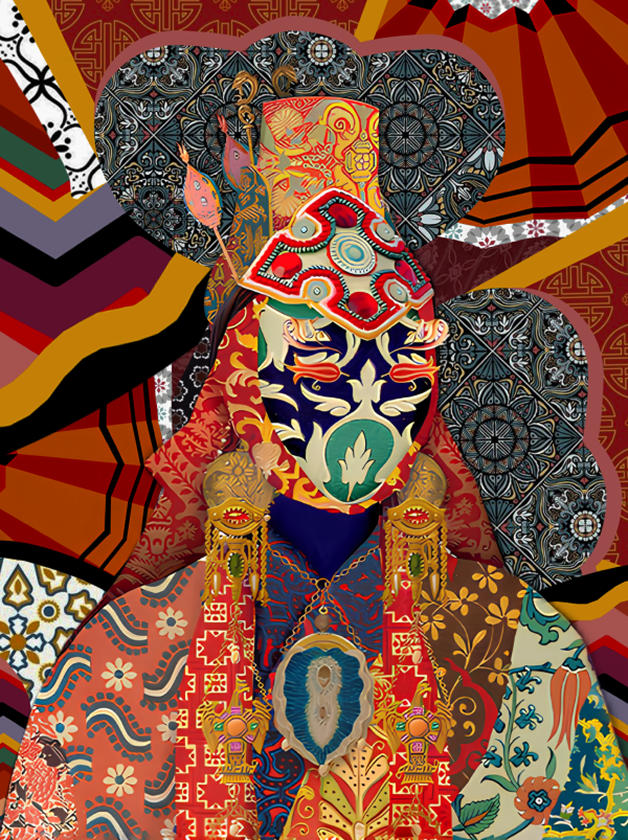
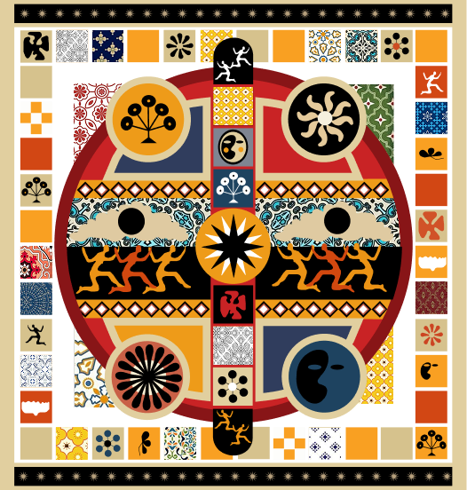
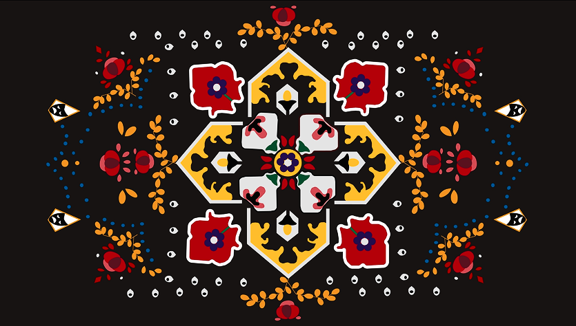
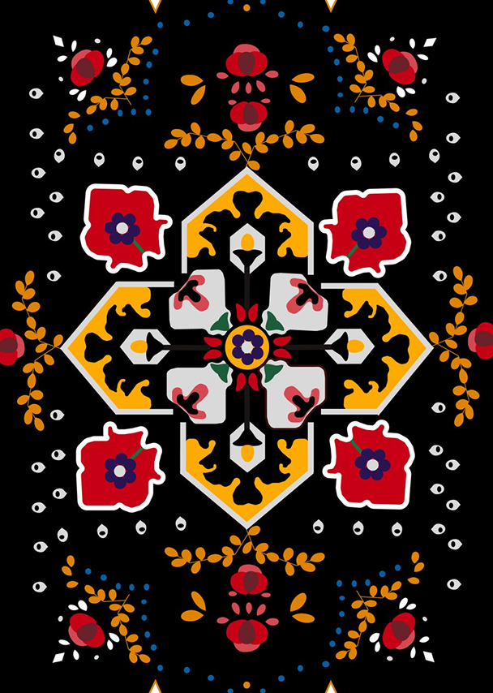

Это не просто онлайн-платформа, а пространство цифровой терапии. Здесь каждый зритель становится участником волшебного ритуала отдыха и перезагрузки.
Это место, где можно остановиться, выдохнуть и на время забыть о спешке. Театр летающих ковров — это визуальная медитация, портал в магический мир, который мягко обнимает и возвращает внутреннюю тишину.
Просто открой сайт — и позволь себе быть.